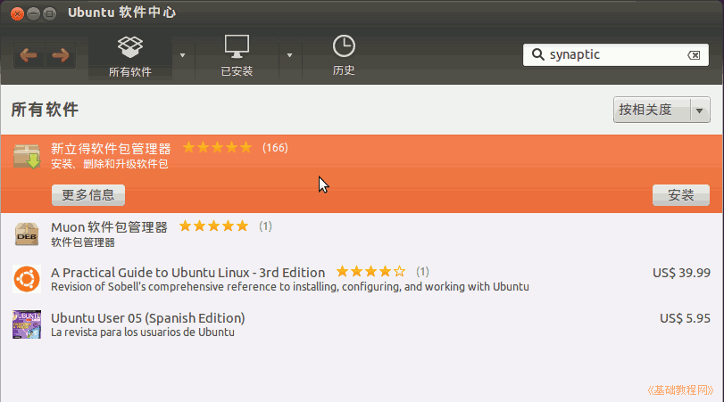
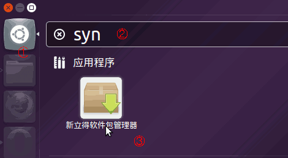
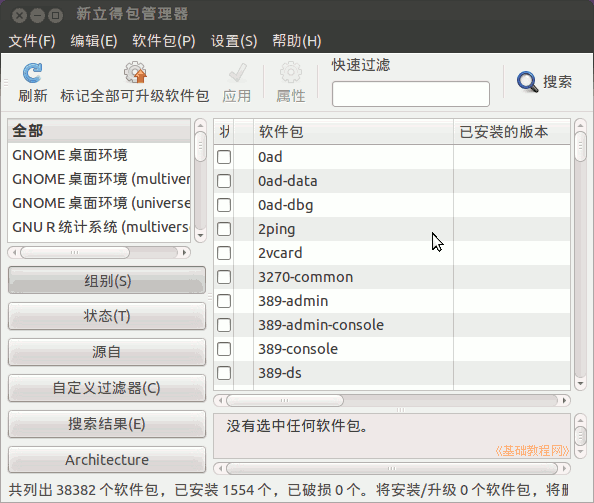
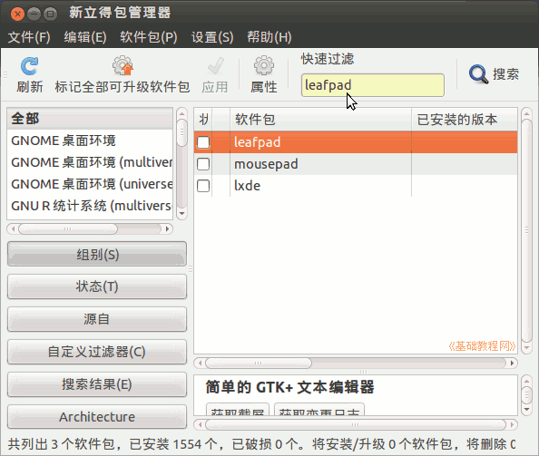
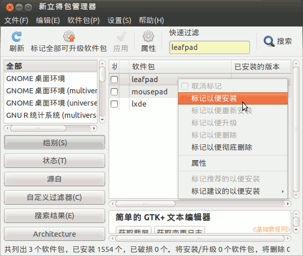
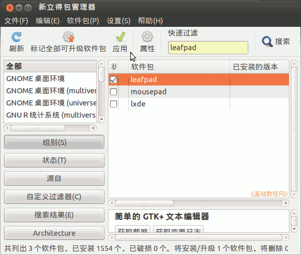
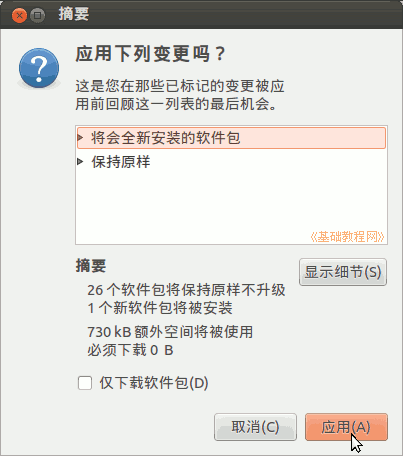
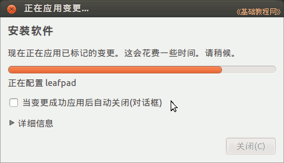
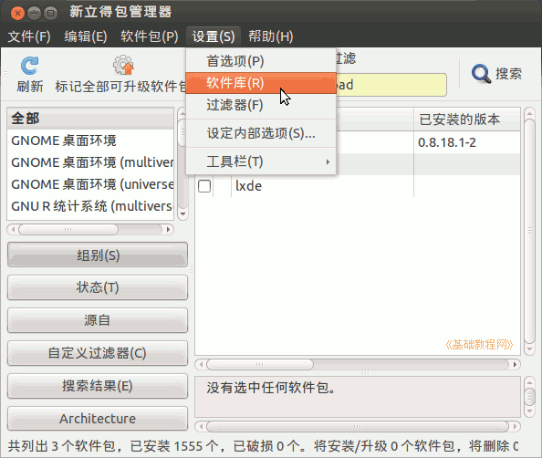

Ubuntu 入门操作指南
作者：TeliuTe 来源：基础教程网
十五、新立得 返回目录 下一课跟软件中心相似，新立得也是用来安装和卸载软件的工具；
1、新立得软件包管理器
1）首先在软件中心里，搜索安装新立得，参考第10课的软件中心；

2）安装好以后，点左上角的主按钮，在出来的面板中输入syn，然后点击下边出来的“新立得软件包管理器”；

3）输入自己的密码后，出来新立得窗口，关闭首次出来的提示框；

4）在上边的搜索框中，输入 leafpad 下边出来搜索结果；

5）瞄准下边列表框中的 leafpad 点右键，在出来的菜单中选择“标记以便安装”；

6）然后软件前面打勾选中，点击上边工具栏中的“应用”绿勾按钮；

7）在出来的信息确认对话框中点“应用”；

8）稍等出来完成对话框，点“关闭”按钮完成，软件就安装好了，在主面板里可以找着；

9）点菜单“工具－软件库”还可以设置软件源；

本节学习了新立得软件包管理器的基础知识，如果你成功地完成了练习，请继续学习下一课内容；
本教程由86团学校TeliuTe制作|著作权所有
基础教程网：http://teliute.org/
美丽的校园……
转载和引用本站内容，请保留版权信息和本站链接。